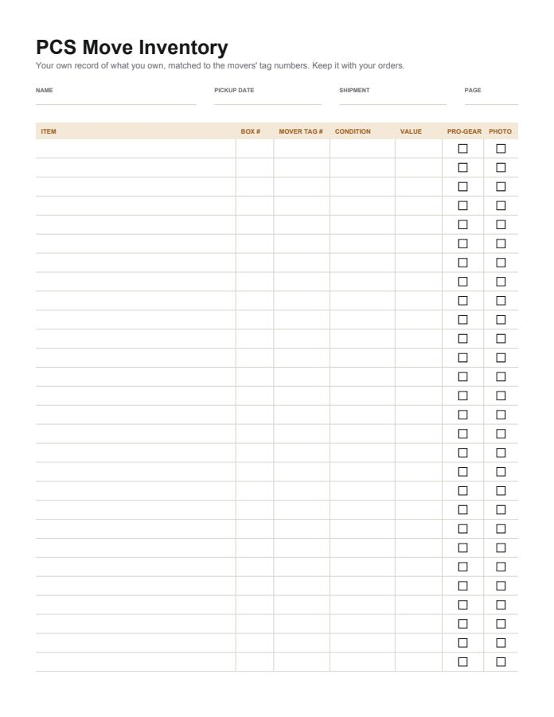

Military moves
PCS move inventory.
On a PCS move the packers tag everything with a number and write their own inventory. Keep yours alongside it: what's in each box, what it's worth, and its condition before pickup. When something goes missing, that's the record that helps you get paid.

PCS move inventory2 pages
Item, your box #, the movers' tag #, condition, value, plus Pro-gear and Photo ticks. US Letter.
Download PDF →
Box-by-box checklist
One line per box with Packed and Arrived ticks. Handy for a PPM, when you pack yourself.
Download PDF →Packing yourself?
For a PPM (personally procured move), label your own boxes too.
Before the packers arrive
- Photograph every room. A slow video walk-through works too. Get close-ups of anything valuable and photos of serial numbers on electronics.
- List high-value items one by one. Electronics, instruments, jewelry, collections, and anything you'd need a receipt for. Note the value and tick the Photo column once it's photographed.
- Separate your pro-gear. Professional books, papers, and equipment can be shipped as pro-gear, which isn't counted against your weight allowance within its own limits. Put it in one place, declare it before pickup, and tick the Pro-gear column. Service guidance asks for it to be marked on the movers' inventory, commonly as M-PRO for the service member and S-PRO for a spouse.
- Set up a do-not-pack zone. Orders, IDs, passports, medical and school records, valuables, medicine, and laptops. Use an empty bathroom or closet and tape a big DO NOT PACK sign on the door.
During pack-out
- Stay for the whole pack. Or have someone you trust there with a copy of your list.
- Write down the movers' tag numbers. Each box and large item gets a numbered sticker. Put that number in the Mover tag # column next to your own line, so you can trace any item to a tag.
- Read the condition notes before you sign. Packers note scratches and dents on the inventory. If you disagree with a note, write your exception on the inventory before you sign it.
- Check the pro-gear is marked. Make sure each pro-gear box is labeled as pro-gear on the movers' inventory before the truck leaves.
At delivery
- Check off every tag number. Sit by the door with the movers' inventory and call out each tag as it comes in.
- Note missing or damaged items before signing. Write them on the delivery paperwork while the crew is there. Take photos of damage, including the box it came in.
- Unpack the high-value list first. Check the items on your own list against its condition notes and photos.
If something is lost or damaged
Current Army and Marine Corps claims guidance gives two deadlines, both counted from the delivery date:
| Deadline | What to do |
|---|---|
| 180 days | Notify the moving company of each lost or damaged item. |
| 9 months | File the claim with the moving company to get full replacement value. |
Your inventory makes both easier: each line already has the item, its tag number, its condition at pickup, its value, and whether you have a photo.
Rules and systems for military moves change. Confirm deadlines and steps with your installation's transportation office or claims office before you rely on them. This page and sheet are a personal record, not an official form.
For the next PCS, and the one after
Your inventory, with photos, on your phone.
Moving Box Tracker for iPhone keeps a list of what's in every box, with photos, and prints a QR label to scan later. Share the move with your spouse over iCloud so you both see the same list. Free for unlimited boxes; a one-time upgrade adds search and unpack tracking for every future move.

Good to know
Questions, answered.
Don't the movers already make an inventory on a PCS move?
Yes. The movers tag each item and box with a number and write a short description and condition. Your own list adds what the movers' list leaves out: what's inside each box, what each item is worth, and photos.
How do I mark pro-gear on the inventory?
Separate pro-gear before the movers arrive and declare it before pickup. Service guidance asks that it be marked on the inventory, commonly as M-PRO for the service member and S-PRO for a spouse. Confirm the current rules with your transportation office.
How long do I have to report lost or damaged items?
Current Army and Marine Corps guidance gives 180 days from delivery to notify the moving company, and 9 months from delivery to file the claim for full replacement value. Rules change, so confirm with your installation's transportation or claims office.
Is this sheet official?
No. It's a personal record to keep alongside the official inventory, not a replacement for any government form.
More free moving help